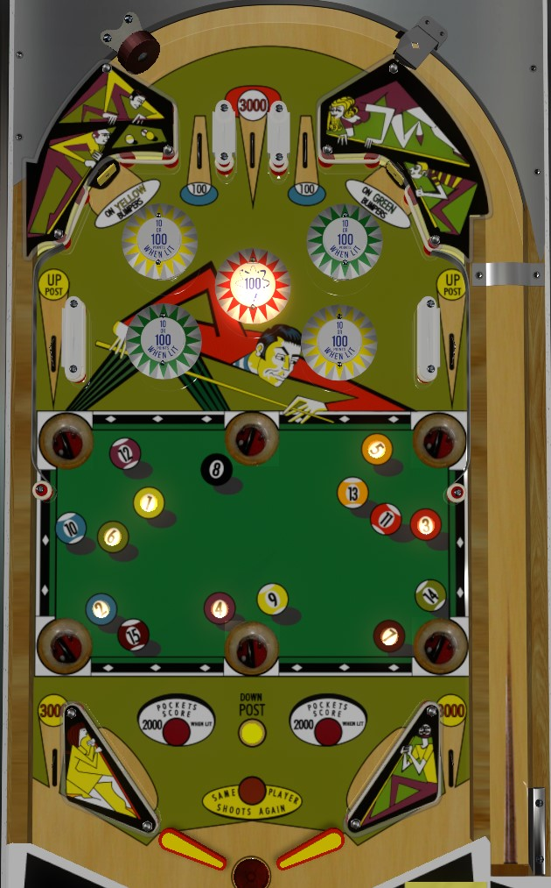

Always plunge the center top lane; it scores 3,000 points when the other two lanes score only 100.
Yellow and green pop bumpers score 10 points or 100 when lit; the standup targets at the top of the playfield each light one colour of bumpers. Yellow and green bumpers are unlit at the end of the ball. The center red bumper is always lit for 100 points.
The six "pool pocket" saucers can all be lit for one or two pool balls. All saucers score 500 points. Making a saucer with a lit pool ball in front of it collects that pool ball. If a saucer has 2 pool balls lit in front of it, only one is collected at a time. Collecting all of 1-7 (if you are player 1) or 9-15 (if you are player 2) lights the upper middle saucer for the 8 ball. Collecting the 8 ball scores an instant extra ball and lights all saucers for 2,000 points for the rest of the ball in play. Draining after collecting the 8 ball resets the entire sequence, reverting all saucers to their initial 500 point value and forcing you to collect the 1-7 or 9-15 pool balls again.
The upper side lanes score 1,000 points and raise the center post between the flippers. The rollover button just above the center post lowers it. Slingshots score 10 points. Out lanes score 3,000 points. There is no end of ball bonus.
